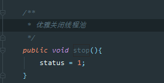

原文连接:https://www.cnblogs.com/dongfangqiezi/p/12027706.html
很早之前就看过线程池源码（知道大概的运行原理），但是只是知道怎么用，并没有深究。这次为了帮助自己深入理解线程池，决定手动写一个极简（陋）的线程池，顺便记录思考和造轮过程。
虽然不太可能和jdk自带的那么完美，但是该有的功能还是要有：
- 新建线程池，有核心线程数和最大线程数，线程存活时间，队列
- 在线程池加入线程，当前线程数不超过核心线程数就新建线程，超过核心放队列，队列满了再新建线程，达到最大线程
- 全部线程运行完成后会保留核心线程数，支持线程存活时间
- 立即关闭线程池
- 优雅的关闭线程池
1.新建一个轮子线程池类,就一个构造函数，把需要的参数都传进来
2.用ThreadPoolExecutor的时候，新建了线程池就会往里面提交线程了，我们写的也一样，而且往线程池里面加线程的时候就会判断：当前运行线程数是否大于核心线程数，是否大于最大线程数等，这里需要一个当前运行线程数的变量。
所以这里增加一个成员变量activeCount，初始值为0，运行一个线程就加1，线程运行结束就减1，这里面减的时候是在不同线程里面，所以为了线程安全用AtomicInteger类型
/** 当前活动线程数 */
private AtomicInteger activeCount = new AtomicInteger(0);提交线程的方法，看过ThreadPoolExecutor源码的应该知道，里面每个线程都是包装了一个Worker类，新增线程的时候就会新建一个worker，为什么要这么做呢？
我第一次看的时候也不理解，想着如果直接把传进来的线程start一下怎么样，如果直接新建线程会立马就发现问题，怎么知道线程什么运行完，怎么把activeCount减1？
所以这里不能直接start，必须新建一个线程（异步执行，废话），这个线程必须要运行参数的线程run方法（废话，不然参数还有啥用，我们的业务逻辑咋执行），线程运行完成后activeCount减1。
所以这里有了worker类，worker本身也是一个线程。顺便把线程名字也解决了，新建一个threadNum从0开始，新建一个worker就+1
提交线程
3.现在已经有点样子了，但是问题还很多，主要的一个问题：比如我建一个core=2,max=5,queue=5的线程池，假设往里面放了8个线程，会出现只运行了3个线程，跑完也就结束了，剩下的5个会在队列里面没处理，而且也不会保留2个核心线程
WheelThreadPool2的运行结果
现在想想怎么把队列的线程拿出来运行，没看ThreadPoolExecutor源码前我第一次想着是不是在创建线程池的时候默认启动一个线程去队列里面获取并执行，然而一想立马否定了，因为线程池是多线程运行的，队列里面的线程需要max（参数最大线程数）个线程同时执行。
所以在我们新建的worker里面要能不断的循环获取队列的线程去执行，如果队列为空了，则退出循环，让线程结束
改造一下worker的run方法，在execute方法创建的worker线程执行完通过参数传进来的runnable之后，循环获取队列并执行队列线程的run方法
这样还有点问题，如果try里面出现异常，比如runnable.run异常或者r.run异常，这个线程就退出了，不能保持max个线程并行执行
所以如果异常了需要重新创建一个线程继续跑循环，改造后
这样改造后如果队列空了会把所有线程都结束掉，所以现在要解决执行完队列后保留core个线程的问题，怎么保留线程其实是通过阻塞队列实现的，
当队列为空时，通过queue.take()方法阻塞住当前线程，直到又有线程提交。如果当前活动线程超出core，结束当前线程
这样改造后大概轮廓出来了，因为queue是阻塞队列，而且各个方法都加了线程锁，所以本身也是线程安全的，这部分代码貌似不需要加锁，跑个测试用例试下，貌似很合理
WheelThreadPoolTest3结果
先放着，再看看下个功能，要支持线程存活时间，这个存活时间的意思是：比如上面WheelThreadPoolTest3里面的线程池运行了10个线程，跑完之后剩余2个线程，3个消亡了（完成任务了）。
后面再提交10个线程，又新建3个线程（从控制台的线程名字可以看出），如果我们设置一个存活时间，让第一批的10个跑完后的那3个线程不消亡，比如存活5秒，第二批的10个跑的时候就可以复用，不需要重新创建线程。
因为线程是稀缺资源，能复用就复用，新建线程也影响效率
目前的代码线程消亡的标记是因为queue.poll获取到了null，导致循环退出，线程完成。而阻塞队列的poll方法还有一个多态方法E poll(long timeout, TimeUnit unit)，可以在一定时间内poll，在时间内获取到了就会返回，这个时间刚好用于是线程的存活时间（死亡倒计时？？）。
构造方法已经传了存活时间和单位，直接加上这两个参数
再来测试下，存活时间设置为5秒，那样第二批只能提交5个线程，否则会导致线程池慢
结果
发生一个大问题，最后线程都没了，而且主线程也退出了
原因：第一批的10个线程执行完后因为线程存活5秒，所以都保留了

堆栈打印出来也证实了，都在poll里面阻塞，然后第二批5个线程已提交，这存活的5个线程就会立马开始执行，执行完后再次阻塞再poll，等过了存活时间，线程全部结束！
在第二批执行结束后再次打印堆栈，结果果然是这样
问题知道了，解决方法

这里的lock是一个线程锁，防止多个线程同时判断（同时判断了写这个还有意义么。。）
/** 线程锁 */ private Lock lock = new ReentrantLock();
至此，写好了主要部分，测试下
不过有个地方我自己代码走读，感觉是有问题
感觉这里会存在线程安全问题，假设线程池队列为空，当前activeCount大于core，并发情况下，多个线程同时满足activeCount.get()>coreCount,之后所有线程都会走queue.poll分支，因为队列为空，所有线程queue.poll返回为null，所有线程全部结束掉，这样和保留core个线程冲突了。
纠结许久后来发现这个假设不成立，要在没有进入while之前就出现队列为空，且activeCount>core，这种情况不会出现，因为在提交线程的方法(execute)已经限制了这种情况，但是这个代码看起来会有歧义，还是决定改造改造
这回走读一次，感觉好多了，终于把主要功能写完了，也能正常跑了
4.立即关闭线程池
线程池里面的线程跑完了，但是还有core个线程阻塞着，这么一直阻塞着也不是办法，所以要有个关闭的方法，先写暴力关闭，当前运行的线程中断，队列抛弃
思考时间：中断线程肯定是调用
Thread.interrupt方法，这样我得拿到正在运行得线程才行，所以在新增线程的时候得保存在一个集合里，而且线程执行得时候异常了，也会新增线程，所以这个保存集合要线程安全，而且存取速度要快
这里需要一个线程安全得set集合，ConcurrentHashMap里面有个newKeySet方法，看了下源码是通过ConcurrentHashMap的key来的，是线程安全的，直接用/** 保存正在运行的线程 */ private Set<Worker> workers = ConcurrentHashMap.newKeySet();还需要一个状态标识当前线程池是否关闭，这个状态要在线程并发（获取队列线程）情况下可以判断，所以用volatile修饰，默认正在运行
/** 线程池状态，-1：正在运行，0：暴力关闭，1：优雅关闭 */ private volatile int status = -1;
新建暴力关闭方法stopNow
在新建worker的时候都加到workers里面去，这时候一想，activeCount和workers.size是不是重复了，顺带把activeCount删掉，用workers.size代替，线程执行完成workers.remove掉
新增方法addWorker

提交线程方法改造，删掉了activeCount，用workers.size代替
worker的run方法改造，删掉了activeCount，用workers.size代替，activeCount-1用workers.remove(this)代替
改造完了，查看一下，暴力关闭需要立即中断线程，抛弃队列，所以在while获取队列那里要增加判断
提交线程方法增加状态判断

改造完成，测试下暴力关闭
结果，整个程序也退出了，线程池结束了，队列只运行了一个线程
5.优雅关闭线程池
优雅的关闭线程池，是要让所有的线程和队列都运行完毕再关闭所有线程，这样就不能直接interrupt线程了，先设置status=1未优雅关闭
新增优雅关闭方法

提交线程方法增加状态，限制提交
这里调用stop方法时分情况：
- 1.存在线程还在执行（队列或者当前线程），执行完成后调用workers所有线程的interrupt，防止存在线程在queue.take处阻塞
- 2.不存在线程还在执行（队列或者当前线程），调用workers所有线程的interrupt，防止存在线程在queue.take处阻塞
所以这里需要一个标记，是否还存在线程在执行，我们可以用一个数字标识当前还需要执行的线程数量，执行完一个线程就-1
增加成员变量remainingCount，标识剩余线程数
/** 剩余线程数 */ private AtomicInteger remainingCount = new AtomicInteger(0);
每次提交一个线程+1
每次执行完一个线程-1
第一种情况，存在线程还在执行，在执行完成后判断remainingCount是否为0
第二种情况，不存在线程还在执行，在stop的时候增加判断
抽象封装下方法
顺便把worker的run方法也优化下，一个屏幕都截不下了
跑个第一种情况的测试用例
结果出乎意料，居然没有结束所有线程
加日志调试
出现了更夸张的错误
根据控制台信息可以想象，原本的5个线程全部被interrupt，又不断地创建线程，又不断的被interrupt。
这里会创建线程的地方只有在worker的run方法异常，finally代码段里面，而且没加日志的时候没有出现这种情况，加了日志就出现了。
多次代码走读后，发现一种可能，在最初5个线程同时将队列消耗完后，2个线程进入take阻塞，3个线程开始进入interruptWorkers方法，导致那2个线程出现异常，异常后会退出线程，再次创建新线程，并且interrupt新线程，由此陷入死循环
改造getQueueTask方法，不抛出异常，出现异常返回null。顺便走读一下status=0的情况，发现不影响
再次运行测试用例，结果符合预期了，这里的异常堆栈可以忽略
再测试优雅关闭的第二种情况
结果正常
去掉调试日志，至此，这个轮子线程池完成，具备线程池基础功能
总结
写这个线程池过程曲折，各种问题不断出现，特别时两种关闭方法，判断比较烦，代码走读和调试良久，才堪堪解决，由此联想ThreadPoolExecutor是多么强大，多么不简单
图片较多，代码可以在Github上找到
参考资料：ThreadPoolExecutor源码
感谢crossoverjie的文章：https://crossoverjie.top/2019/05/20/concurrent/threadpool-01/
本文来自chentiefeng的博客